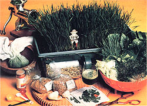

There's more good to be ahd from grass than the "pleasure" of sowing, mowing, and showing it.
Have you ever watched cattle or horses grazing and wondered how such large, strong, and downright magnificent creatures sustain themselves on a diet that's primarily composed of grass? Well, I have, and the notion never ceased to amaze me . . . that is, until I did some research and found out just how much food value chlorophyll-rich grasses offer.
Of course, more and more folks are finding out about the outstanding nutritional value of raw foods such as fresh greens, sprouts, and - although it's less well known than the others - wheatgrass . . . thanks to the tireless crusading efforts of a few nutritional scientists, most notably Dr. Ann Wigmore of the Hippocrates Health Institute in Boston, Massachusetts. It seems that - as a young woman - Dr. Wigmore was once afflicted with gangrene in both legs. She cured herself through the use of nutrition-rich, freshly grown wheatgrass . . . and went on to become one of this country's leading experts on sprout and wheatgrass therapy, a regimen that has been used in the treatment of nearly all chronic disorders.
WHY WHEATGRASS?
Nutritionally speaking, wheatgrass is one of the best of all grasses. It has the ability to absorb more than 100 elements from the soil (depending on the quality of the seed and the medium it's grown in, of course), and is a rich source of vitamins A and C and the Bcomplex . . . as well as of calcium, iron, magnesium, phosphorus, potassium, sodium, sulfur, cobalt, and zinc. What's more, the food is abundant in vitamin B-17 (more commonly known as laetrile), a substance that's said to selectively destroy cancer cells in the body.
In one of many studies conducted by Dr. Wigmore, two flocks of chicks were fed identical diets, but one group received a supplement of chopped fresh wheatgrass. Within a few weeks the chicks that were fed the supplement had grown much larger than the others, were more alert, and had more feathers. Further tests with rabbits and kittens produced similar results.
In fact, some researchers now claim that 15 pounds of fresh wheatgrass is nutritionally equivalent to 350 pounds of garden vegetables. Wheatgrass, then, might prove to be an excellent survival food . . . because it's inexpensive, easily accessible, highly nutritious, palatable, and free of poisonous sprays. The grass can be raised year round in any apartment or house, in the city or the country, and grows well either in indirect sunlight or under artificial light. It's hardly surprising that many nations are looking toward various grasses in the search for emergency means of feeding their populations.
WHEATGRASS JUICE
Probably the easiest way to enjoy the benefits of wheatgrass is by drinking its juice. The solid matter contained in wheatgrass juice is approximately 70% chlorophyll, a substance that has been called "nature's great healer". And when the juice is taken internally, the chlorophyll is rapidly assimilated into the bloodstream, because the liquid's chemical composition resembles that of hemoglobin. For that reason, the "crude" chlorophyll enters red blood cells quickly . . . where it's said to heal tissues, purify the liver, improve blood sugar, and generally help flush out ingested toxins from within the body.
In action, chlorophyll seems to produce an unfavorable environment for bacterial growth in the body, rather than having any direct effect upon the bacteria themselves. Its fans claim that as a result of this quality, the compound neutralizes body odors, freshens breath, prevents infection in cuts and burns, aids digestion, and even seems to offer some protection against radiation. Indeed, considerable evidence indicates that a chlorophyll-rich diet affects the survival rate of laboratory animals receiving high doses of radiation. In one such experiment, every animal that did not receive fresh greens died within 10 to 15 days, while only half of the greens eaters failed to survive the same period.
It's speculated, then, that wheatgrass juice - taken on a daily basis - might even slow down the harmful effects of X-rays, and it's been claimed that wheatgrass plants kept in front of a color television set will actually absorb part of the radiation that the tube emits, as well as some pollutants and odors from the indoor air.
Wheatgrass juice is said to be helpful when used externally as well as when taken internally. Some claim that an enema of fresh wheatgrass juice cleans out the bowel and eliminates constipation, and the liquid is also used as a douche to clear up vaginal infections. If you're plagued by dandruff, you might want to try rubbing the juice into your scalp, then rinsing and shampooing as usual. Even skin disorders such as eczema and psoriasis are said to be helped by the juice's healing chlorophyll. And don't forget to give your four-legged household companions a share in the crop. Adding a few blades of wheatgrass to your pets' drinking water will help keep them healthy, too.
HOW TO GROW WHEATGRASS . . .
For best results purchase hard, red winter wheat berries from a health food store or organic foods co-op. Then soak the seeds in lukewarm water overnight.
Wheatgrass can be grown in almost any shallow container. The staff at the Hippocrates Health Institute uses discarded biscuit trays from a bakery supply house, but wooden or plastic seedling flats also work well.
The following regimen may be more than most folks will want to attempt, but it shows just how serious some wholistic health people are about the benefits of sprouted wheat.
To begin, line each flat with peat moss and moisten it. Then layer about an inch of good, rich soil on top, leaving slight gullies around the perimeter to insure proper drainage, and add enough water to make the soil spongy with moisture.
When you drain the seeds prior to planting them, be sure to save the water they were soaking in and either drink it yourself or feed it to your plants or animals. (This liquid is known to wheatgrass fans as "Rejuvalac" and is said to be very healthful.)
Now, spread the swollen berries thickly over the moist soil so that seed touches seed. Cover the flat with a layer of wet newspaper and then a layer of plastic, and leave it covered for two or three days. When you remove the plastic and newsprint, you should see small whitish sprouts peeping through the earth (they'll quickly turn green when you place them in the light).
Set the flats in a sheltered spot, where they'll be out of the direct rays of the sun from about 11:00 a.m. to 3:00 p.m. (full midday sunlight has a tendency to sap the strength of the plants). When the blades reach 5" to 7" high - usually within 6 to 14 days - the grass is ready for cutting. Until then, make sure the flats are watered at least once a day.
Harvest your crop with a sharp knife or a pair of scissors, slicing the blades as near to their base as you can. If the grass pulls out in clumps, rinse it carefully so that you don't get any soil in your juice.
Once the harvest is completed, turn the stubble over without breaking it up. (You might also want to add a few earthworms to the flats.) Cover the dirt with plastic - to keep it moist - and allow it to rest for about three weeks before replanting it.
. . AND JUICE IT
The folks at Hippocrates have a manual wheatgrass-juicing machine that sells for about $75. The grass must be pulverized and then pressed to extract the juice. (If you use an electric extractor or a blender, you'll risk oxidizing the chlorophyll in the grass.)
However, if you don't want to go to the expense of buying specialized equipment, an old-fashioned meat grinder will do the job . . . as will a mortar and pestle (squeeze and smash the grass, then strain the juice through a cheesecloth . . . the leftover pulp is a fine poultice for cuts, burns, and sores).
Of course, there's always the "original" method of extracting the juice: Simply place small bunches of wheatgrass in your mouth and chew them slowly. This method of "juicing" can be done anywhere, anytime . . . but it's best to partake of wheatgrass on an empty stomach.
When you begin drinking the juice, start slowly. Take one or two tablespoons of the liquid daily, at first. It's recommended that you consume it in the morning on an empty stomach, and avoid solid foods for about 20 minutes afterward. Sip the juice slowly, mixing it with your saliva before swallowing it.
Wheatgrass juice often brings on feelings of nausea when the enzymes present in the juice mix with the toxins and mucus in your stomach. If that happens, lie down and rest until the feeling passes. (Some folks find it helpful to chew a little celery.) The wheatgrass is not toxic or harmful to you in any way, but its cleansing properties do - it's said - cause accumulated toxins in your body to empty quickly into your stomach. So just as you would with any new diet or exercise program, use caution and proceed slowly.
If you're trying to "detoxify" your system, wheatgrass enthusiasts say that you should gradually increase your intake until you're drinking three to eight ounces of juice daily . . . then - once you reach good health - two ounces a day will serve as a maintenance dose.
One pound of dry wheat produces two pounds of sprouts, four pounds of grass, or a maximum of 42 ounces of wheatgrass juice. The cut blades will keep for a short while in the refrigerator, although some nutrients are lost in storage. The juice, on the other hand, must be drunk immediately after it's squeezed to be fully effective.
Most folks sip the liquid straight, but it can easily be mixed with other vegetable juices. In fact, here's a sample recipe, reprinted (by permission) from Dr. Ann Wigmore's book Recipes for Longer Life.
GREEN DRINK NO. 2
1 small bunch of wheatgrass
2 cups of mixed sprouts (alfalfa, mung)
1/2 cup of fenugreek sprouts
2 cups of salad greens
Put all the ingredients through a grass juicer, then place them in a cheesecloth bag and squeeze the juice from the pulp. You should get about 8 ounces. To make the beverage zestier, include 2 to 4 cloves of garlic and 1 to 2 teaspoons of cayenne pepper.
EDITOR'S NOTE: To find out more about wheatgrass juice and its possible healing properties - or to obtain a price list of the equipment and books available on the subject - write to the Hippocrates World Health Organization, Dept. TMEN, 25 Exeter Street, Boston, Massachusetts 02116. Please include a self-addressed, stamped envelope.
|
 |
|
|